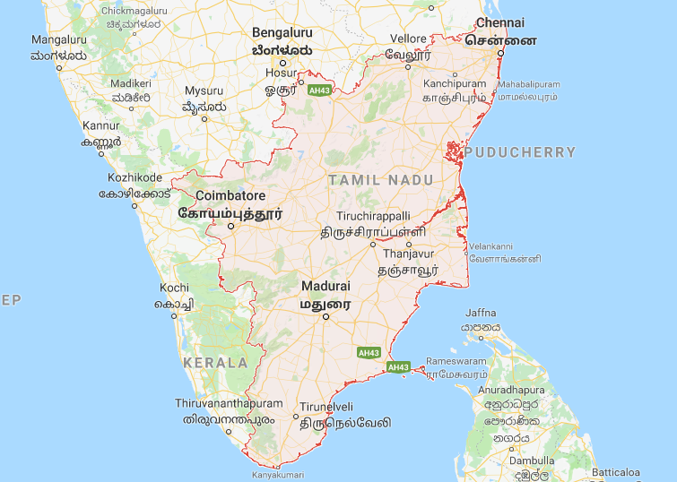

Tamil Nadu is one of the 29 states of India. Its capital and largest city is Chennai (formerly known as Madras). Tamil Nadu lies in the southernmost part of the Indian Peninsula and is bordered by the union territory of Puducherry and the South Indian states of Kerala, Karnataka, and Andhra Pradesh. It is bounded by the Eastern Ghats on the north, by the Nilgiri, the Anamalai Hills, and Kerala on the west, by the Bay of Bengal in the east, by the Gulf of Mannar and the Palk Strait on the southeast, and by the Indian Ocean on the south. The state shares a maritime border with the nation of Sri Lanka.Tamil Nadu is the eleventh-largest state in India by area and the sixth-most populous. The state was ranked sixth among states in India according to the Human Development Index in 2011, and is the second largest state economy in India with ₹13,842 billion (US$220 billion) in gross domestic product after Maharashtra. Tamil Nadu was ranked as one of the top seven developed states in India based on a "Multidimensional Development Index" in a 2013 report published by the Reserve Bank of India. Its official language is Tamil, which is one of the longest-surviving classical languages in the world. Tamil Nadu is home to many natural resources. In addition, its people have developed and continue classical arts, classical music, and classical literature. The state is also home to a number of historic buildings and religious sites including Hindu temples of Tamil architecture, historic hill stations, multi-religious pilgrimage sites, and eight UNESCO World Heritage Sites.
